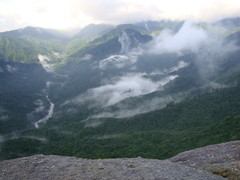
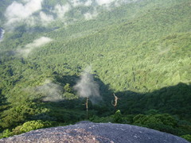

よく旅行前には本や映画でイメージを高めるのだが、今回は屋久島の山をモデルにした「もののけ姫」を直前に見直してきた。
映画の取材後にもののけ姫の森と名づけられた森のある、白谷雲水峡に向かった。
昨日の登山に続いてハードだが、朝もやのかかった状態の山が見たくて早朝に出発。
早朝でないと帰りの船が間に合わないという理由もあったが。
山の入り口に着いた時点で土砂降り。多少の雨ならば問題ないが、沢を歩くには危険を感じるレベルだったので、
まず休憩所で弁当を食べて雨が弱まるのを待った。この作戦勝ちで、ほどなくして雨は弱まってきた。
朝もやのかかった山を川に沿って登っていく。
雨が降っているせいもあると思うが、山の中のいたるところに水場があり、
水溢るる森という印象だった。昨日の山以上に苔が美しい。
一応雨具は持ってきていたが、雨に濡れるより雨具の熱気の方がつらかったため、ほとんど使わなかった。
本日の目的地は太鼓岩。
森の木々の隙間を縫うようにして険しい山道を上った果てに、突然開けて周囲の山々を見渡せる大岩がある。
ちょうど到着する頃に雨も完全に上がり、青空が広がった。滅多に味わえないような幸運と爽快感。
森だけでなくこの太鼓岩も、もののけ姫のモデルになった場所だと見た瞬間わかる。
「黙れ小僧」とか怒鳴っていた場所だ。
| 太鼓岩 | あと一歩で奈落。よく滑る |
|  |
 |
帰りは木漏れ日に照らされた苔を眺めながら山を下る。
これから訪れる人は、もし一日しかなかったら縄文杉よりこちらを勧めたい。
昼食後、島から引き上げた。二泊三日の短期だったが、充実した良い旅行だった。
帰りは来たときと逆の長い道のり、バス→船→バス→飛行機→電車→電車→電車→ここで自転車の鍵をなくしていたため、徒歩。
最後で駄目なオチがついた。
|